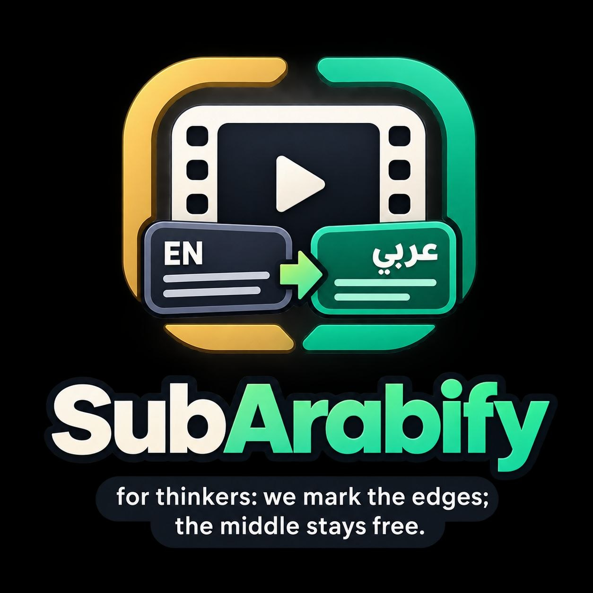

SubArabifyEnglish subtitles become Arabic beside your videos — offline, with a persistent memory so re-runs don't lag. Tap any item to preview cues as normal subtitles.
A folder of videos that already have English .srt files (same name, or .en / .eng / .English)
On-device EN→AR in context chunks, with translation memory. Background scans optional. Nothing leaves the phone.
MovieName.SubArabify.ar.srt next to the video — timings bit-identical, ready for MX Player, VLC, and friends
In-app subtitle viewer — cues rendered like a normal player, Arabic / English toggle included.
Three steps. No cloud pipeline.
Grant access once via Android’s folder picker. Movies, TV, Downloads — any tree.
Run a scan or leave monitoring on. SubArabify finds English subs and translates them offline.
Open the video in your player. Load *.SubArabify.ar.srt — or let the player auto-pick it by name.
Visible where it belongs. Quiet where it doesn't. Timings never touched.
Runs natively on a normal media server and on Android via Termux. Downloads the small Arabic model once, then writes *.SubArabify.ar.srt with untouched timings.
bash jellyfin-addon/run-termux.sh ~/storage/movies — model downloads on enable, then a full scan.
pip install -r jellyfin-addon/requirements.txt, then python jellyfin-addon/subarabify_jellyfin.py --media /media --watch. Systemd unit included.
Full usage in jellyfin-addon/README.md — manifest v1.0.3-beta, same timing-safe branding as the app.